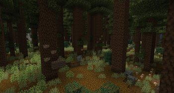
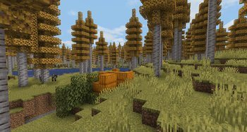
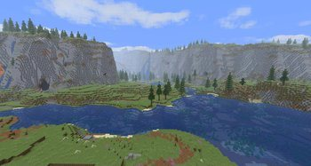
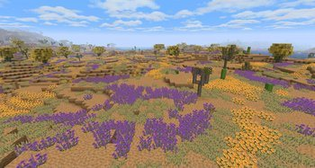
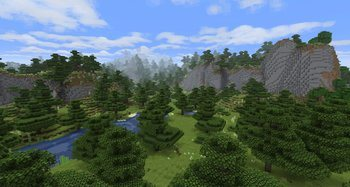
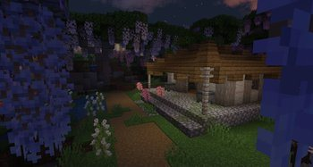
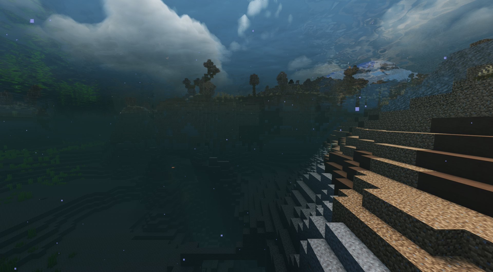

МирThe world
Сид 4242, прогенерирован на 2500 блоков в каждую сторонуSeed 4242, pregenerated 2500 blocks each way
Биомы Terralith, Geophilic и Nature's Spirit, большие деревья, реки, которые текут по рельефу, Incendium в Незере и Better End в Энде. Деревни в стиле CTOV. Шейдеры по желанию: при первом входе игра спросит.Terralith, Geophilic and Nature's Spirit biomes, big trees, rivers that follow the terrain, Incendium in the Nether and Better End in the End. CTOV villages. Shaders are optional: the game asks on first start.
- Луна бывает четырёх видов. Кровавая луна удваивает спавн монстров и их добычу, урожайная удваивает дроп с грядок. Погода в такую ночь всегда ясная.Four kinds of moon. A blood moon doubles monster spawns and their drops, a harvest moon doubles crop drops. The sky stays clear on those nights.
- День длится вдвое дольше ночи (Hourglass): днём есть время на дела, ночь всё равно приходит.Days last twice as long as nights (Hourglass): there is time for work in daylight, and night still comes.
- Структуры YUNG's: мосты, данжи, крепости, шахты, храмы, монументы. Корабли Seven Seas и аванпосты с капитанами, которых надо снять, чтобы открыть сундуки.YUNG's structures: bridges, dungeons, strongholds, mineshafts, temples, monuments. Seven Seas ships and outposts with captains you must take down to open the chests.






 AI-картинкаAI picture
AI-картинкаAI picture
скриншотscreenshot